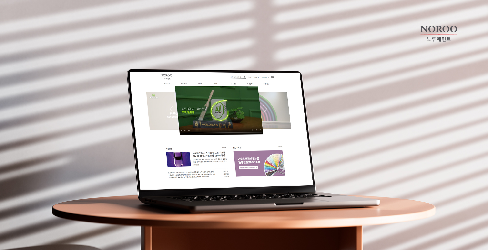
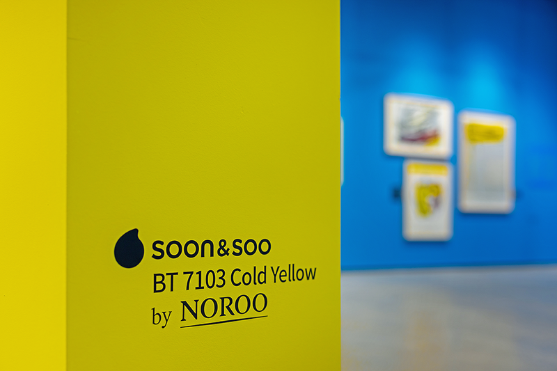
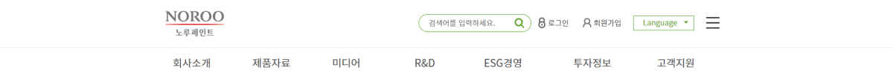
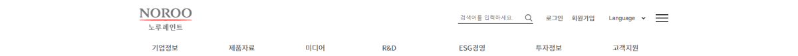
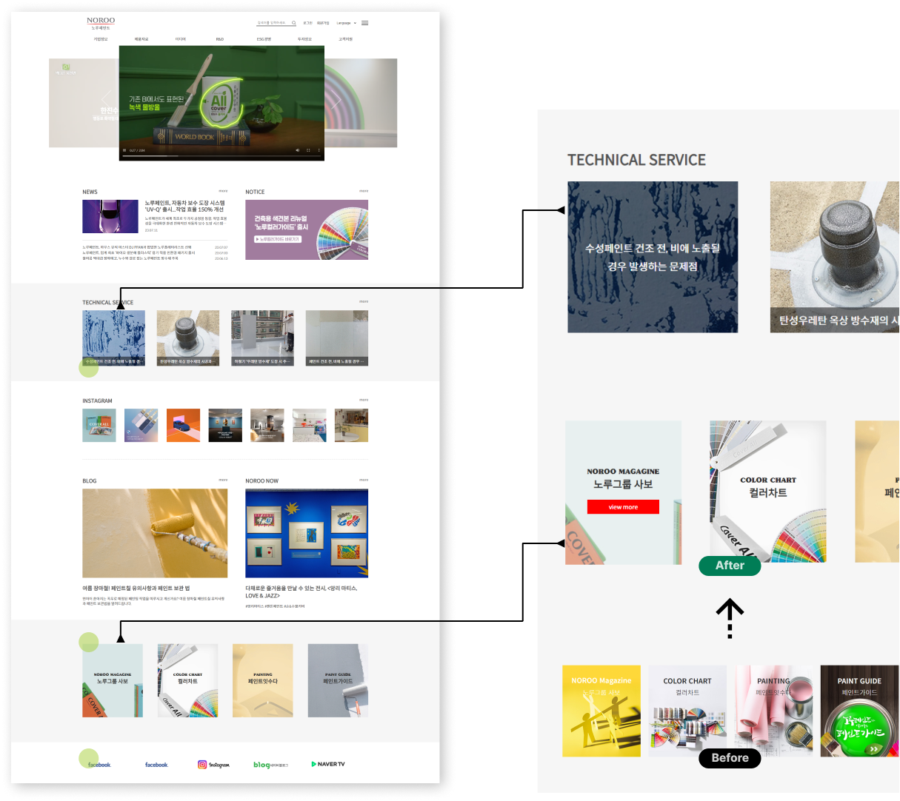
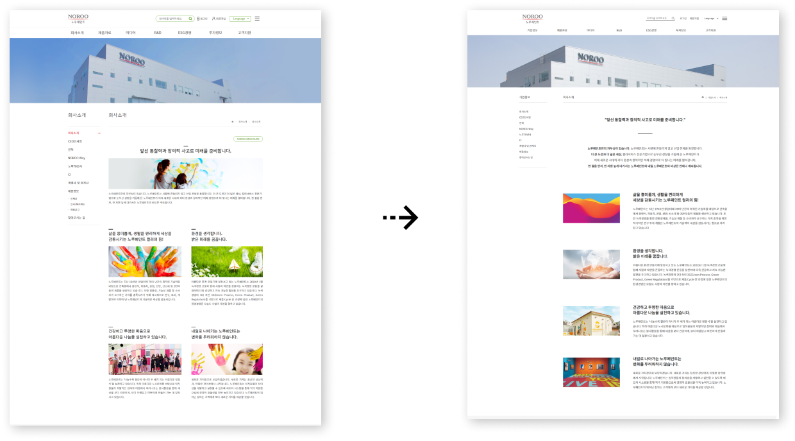
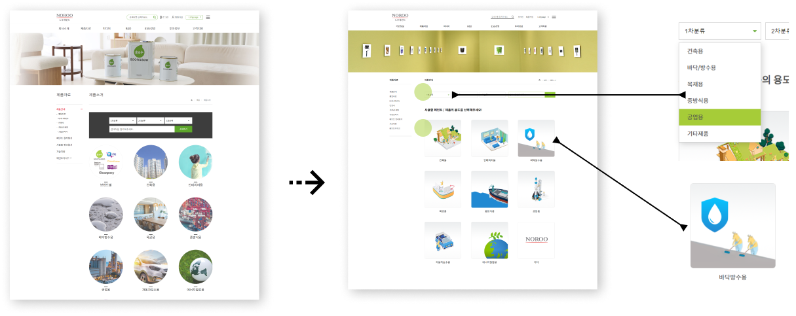
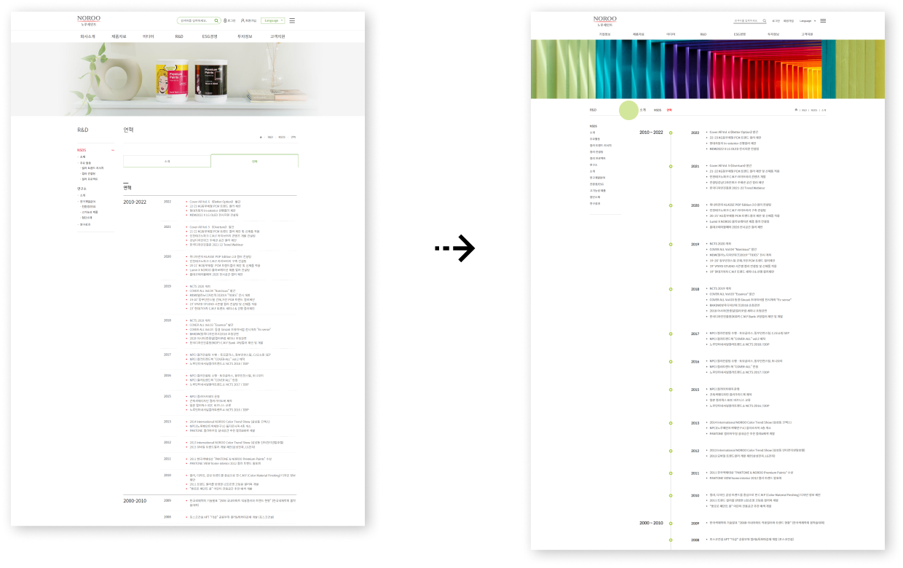
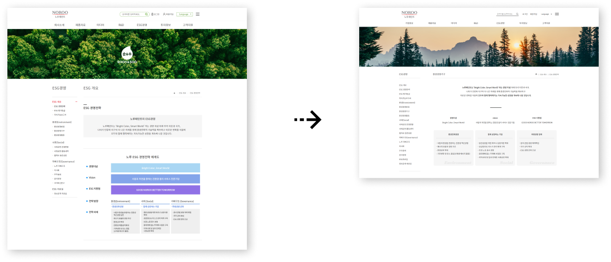

| 타입 | 개인프로젝트 (클론코딩 + 부분적 디자인 변경) | 작업기간 | 2023.08 ~ 2023.10 |
|---|---|---|---|
| 제작범위 | 메인페이지 1개, 서브페이지 4개 ( 기업정보,제품자료, R&D, Esg경영, 투자정보 ) | ||
| 설명 | 웹사이트 구축을 체계적으로 익히기 위해 메뉴와 콘텐츠가 다양한 노루페인트 사이트를선택하여 제작했습니다. 맑고 깨끗한 환경 경영을 추구하는 기업이념과 같이 순수하고 깔끔한 무드를 연출하고자 하였습니다. 기존 홈페이지의 레이아웃을 클론코딩 하며, 아쉽다 느껴지는 디자인의 부분적인 변형을 진행하였습니다. | ||
Color
주조색
#a6ce38
#a6ce38
보조색
#007d56
#007d56
강조색
#e31a2c
#e31a2c
Font Style



문제점과 개선사항
Total
깔끔한 무드 연출을 위한 단순화 작업 !
메뉴바의 검색 아이콘과 로그인 아이콘이 가깝고, 검색박스와 언어상자의 스타일이 불균형하며
커보이는 폰트크기로 인해 산만한 느낌을 받았습니다. 메뉴바를 심플하게 바꿔보았습니다.


마우스를 대거나 클릭할때의 이벤트를 추가한 부분을 표시를 해두었습니다
리뉴얼 홈페이지에서 동작해보세요
-
메인페이지
하단배너 디자인 변경
- 기존 홈페이지의 배너는 이미지가 강하고 문구의 굵기가 약합니다.
문구를 가리지 않으면서 단순한 이미지로 변화를 줬습니다.

-
회사소개 페이지
레이아웃 변경
- 너무 많은 글씨가 한곳에 보여진다면? 피로감을 느끼고 읽기가 싫어집니다. 피로감을 줄이고자 가로 2단 정렬에서 1단 정렬로 수정을 하고, 첫 단락의 기업이념을 잘 전달하고자 텍스트의 크기를 키우고 사진을 삭제하여 강조하였습니다

-
제품소개 페이지
검색박스,카테고리 디자인 변경
- 다양한 자사의 제품을 알리고자 제품들을 전시한 슬라이드 이미지를 제작했습니다. 카테고리 이미지는 기업의 홍보 영상에 나오는 캐릭터를 활용하여 그래픽 작업을 하였습니다. 단순한 그래픽 이미지는 집중도가 좋고 친근하게 느껴지는 효과를 볼 수 있습니다

-
R&D 페이지
막대그래프 삽입
- 타이틀 밑 항목의 탭버튼이 부피가 크고 공간을 차지하는 느낌을 받아 박스를 지우고 문자로만 탭메뉴로 변경하였습니다. 연도 옆 그래프를 기입하여 시간의 흐름을 표현하고자 하였습니다.

-
ESG 페이지
전체 수정
- 새로 리뉴얼한 컨셉에 맞추어 레이아웃과 스타일을 변경하고, 내용은 쉽게 확인할 수 있도록 간략하게 수정하여 보았습니다
